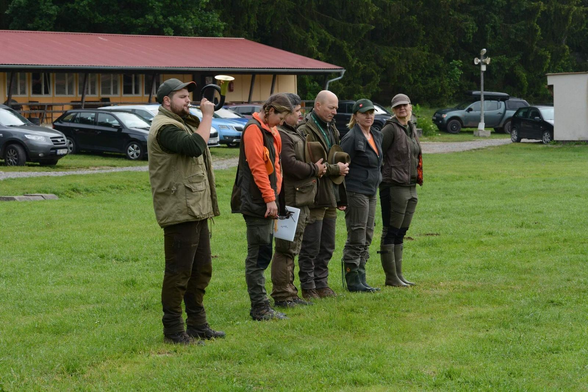
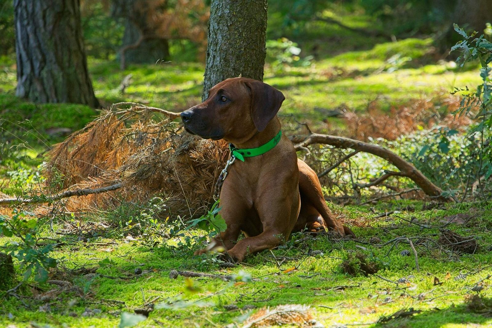
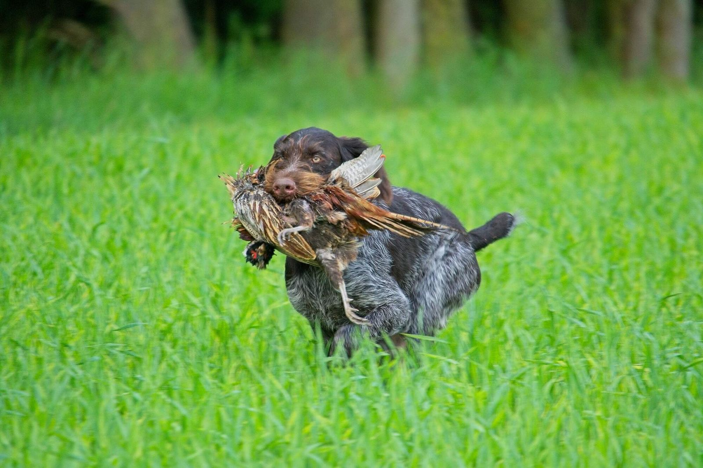

Každý jednou začínal
I my jsme si kdysi pořídili svého prvního loveckého psa a toužili po složení loveckých zkoušek. Nakonec se z koníčka stal doslova kůň…
Jak jsme se ke cvičení pejsků dostali

Každý jednou začínal… I my jsme si kdysi pořídili svého prvního loveckého psa a toužili po složení loveckých zkoušek, toužili po tom dopřát čtyřnohému příteli radost z lovu, pro který byl vyšlechtěn, a zkrátka jsme chtěli trávit čas s naším hafanem při nějaké smysluplné činnosti.
Tenkrát jsme zjistili, že cvičáků a škol na poslušnost je moře… Ale kde připraví mého psa ke zkouškám? Kde naučí mne být dobrým vůdcem a mého psa být psem loveckým a pomocníkem do myslivosti? Hledání nebylo vůbec jednoduché. Literatura, internet, články v časopisech… To je sice mnoho informací… ale co si z toho vybrat… A jak vlastně mají jednotlivé popisované disciplíny vypadat?
Tenkrát nám pomohlo pár kamarádů a lovecké kynologii jsme zcela propadli. Jednoho pejska časem doplnili další členové smečky, jedny odvedené zkoušky následovaly další a začali nás oslovovat lidé, kteří byli ve stejné situaci jako kdysi my, a nakonec se z koníčka stal doslova kůň…
Naše kynologické aktivity jsme postupně „omezili“ pouze na kynologii loveckou a nutné výstavy, a to proto, že pokud člověk chce něco dělat pořádně, tak je lepší se ubírat jedním směrem. Dále z toho důvodu, že nám lovecká kynologie natolik učarovala, že zabírá téměř veškerý volný čas.
Celoročně naši psi pomáhají dosledovat poraněnou zvěř – ať už postřelenou či sraženou autem, pomáhají regulovat škodnou zvěř a jsou nám stálými průvodci, pomocníky a především kamarády. Těmto aktivitám, pro které psy především chováme, předchází zkoušky, výstavy a soutěže. Dospělé psy máme lovecky upotřebitelné s vyššími loveckými zkouškami. Mají splněné exteriérové a zdravotní podmínky k chovnosti.
Další naší aktivitou je i chov psů a prezentace loveckých plemen a lovecké kynologie na různých veřejných akcích, jako jsou Dny dětí, odborné semináře apod. Také se věnujeme výcviku dalších psů a především jejich pánečků a naši psi nám při tom pomáhají. Podílíme se na organizaci výcvikových akcí, loveckých zkoušek a pobytů a výcviků pro všechny, kteří se chtějí svému loveckému psovi věnovat, nejsou myslivci, neví jak psa cvičit a potřebují do začátků poradit, pomoct a navést správným směrem… Pomáháme cvičit jejich pejsky, pomáháme při výchově, přípravě na výstavy, hlídáme pejsky, cvičíme a předvádíme na zkouškách lovecké psy různých plemen.
Z mnoha majitelů pejsků, kteří s námi začínali, jsou nyní zkušení kynologové, chovatelé, vůdci, myslivci či pouze zodpovědní a spokojení majitelé psů. Jsme na ně moc pyšní a přejeme, ať se jim daří dál.
Cvičíme tak, aby byl spokojený jak páneček, tak pes a aby byly vidět výsledky.
Základem úspěšného používání loveckého psa v myslivosti není jen jeho chovatelské prošlechtění, ale především cílevědomý výcvik. Sebelepší původ, sebelepší nadání ani sebečastější výcviková zralost a fyzická připravenost psa samy o sobě nestačí, aby lovecký pes plnil řádně všechny úkoly, které od něho jako loveckého psa žádáme a žádat musíme, jestliže pro tyto úkoly nebyl vhodným způsobem připraven.— Jan Báča
K našim svěřencům se snažíme přistupovat individuálně s přihlédnutím k povaze daného jedince i jeho majitele. Postup výcviku konzultujeme s majitelem, demonstrujeme na našich hafanech a dokládáme výsledky ze zkoušek a z praxe.
Je nám jasné, že každý majitel psa má v dnešním světě k dispozici spoustu informací, ať už z knížek, internetu či od známých pejskařů, a každý má určitou představu o tom, jaké principy a techniky chce při výcviku svého miláčka použít. Jak se ale v tom množství informací vyznat? A jaké metody doopravdy fungují? Jak vyřešit konkrétní problém, který způsob zvolit?
Většinou nikdo nechce svého psa cvičit systémem pokus–omyl. Je jasné, že žádný učený z nebe nespadl a určitě je vám jasné, že podobný problém, jako máte vy, už někdo určitě mnohokrát řešil. Chceme vám v těchto situacích efektivně pomoci, abyste s vaším psem mohli najít společnou řeč a brzy se stali pyšným majitelem vychovaného psa či úspěšným vůdcem na zkouškách.
Ing. Zuzana Čechová
S kynologií jsem začínala takřka od plenek.
Tehdy se však nedalo hovořit o výcviku. Mým prvním psem (takovým tím rodinným) byla žíhaná fena německého boxera Arka bez PP, která mne doslova vylízala ze silného ekzému a dokázala nemožné… Tedy to, na co žádné mastičky nezabíraly. Od té doby byla láska ke psům daná :o). Po ní následoval první MŮJ pes – a to potomek této feny, kříženec boxera a pravděpodobně rotvajlera Aron. O jeho matku jsme přišli při porodu a tohoto hafana jsem „spoluodkojila“ od prvních dnů na flašce. Byl to Pan PES, který by za mne i dýchal, a nejlepší parťák a pracant, kterého jsem kdy měla… i když s jeho trochu dominantní povahou a figurou na kila srovnatelnou s mou byl výcvik trochu oříšek. Byl to první pes, se kterým jsem se aktivně věnovala výcviku. Souběžně s tímto psem jsem pomáhala cvičit babičky mazlíka, černého trpasličího pudla bez PP Nika. Od té doby nedám na pudly dopustit :o).
Po této etapě a po tom, co mne v necelých 17 letech opustil kříženec Aron, jsem dlouho vybírala plemeno. Stále vedl jednoznačně boxer, ale situace tomu nechtěla (naštěstí :o)) a jednou z podmínek mysliveckého sdružení, kde jsem žádala o členství, byl pes lovecký. Pořídila jsem si tedy svého prvního loveckého psa, a to maďarského ohaře krátkosrstého s PP Algerona Laváre Morávia. Tento pes mne mnoho naučil a díky němu jsem doslova propadla lovecké kynologii. Po něm už následovali další členové nyní dosti početné smečky.
Jsem moc ráda za to, že ze spousty lidiček se stali výborní vůdci a svědomití majitelé a především páníci svých loveckých psů. Ze spousty psů, kteří by strávili jistě spokojený život „na gauči“, se stali právoplatní výborní pomocníci při lovu, lovecky upotřebitelní psi, chovní, vycvičení, ovladatelní a bezproblémoví společníci se spokojeným naplněným životem loveckého psa s velkým P. Těší mne, že jsem mnoha lidem pomohla najít novou lásku – loveckou kynologii a myslivost.
Mimo psů se věnuji myslivosti, kterou provozuji vlastně opět se psy :o). Ta je časově náročná hlavně v době lovecké sezóny v podobě víkendových honů a naháněk, kde jsou naši psi nutnými a žádanými pomocníky. Jinak mojí největší láskou a časově náročným „koníčkem“ jsou mé dcerky. Takže je pořád co dělat…

Foto z galerie Loveckého výcviku na Rajčeti.
Psi předvedení na loveckých zkouškách
Seznam předvedených psů na loveckých zkouškách, vůdce Zuzana Čechová. Čísla udávají počet složených zkoušek daného typu.
| Jméno | Plemeno | ZV | PZ | LZ | VP | VZ | BZ | ZN | FT | MFT | NFT |
|---|---|---|---|---|---|---|---|---|---|---|---|
| Algeron Laváre Morávia | MOK | 1 | 1 | 1 | |||||||
| Or Kajan z Baštin | MOK | 1 | 1 | 1 | 1 | 6 | |||||
| Orisa z Mečkovské skály | NDO | 1 | |||||||||
| Ambra z Královských vinic | MOK | 1 | 1 | ||||||||
| Bona od Lodenické stráně | FXH | 1 | 1 | 1 | 1 | ||||||
| Poly z Lesních chalup | AC | 1 | |||||||||
| Beruška Aivor du Néz | WSS | 1 | 1 | 1 | 1 | 1 | 1 | ||||
| Artaban Vives Bohemia | FXH | 1 | 1 | ||||||||
| Bardotte Bertoni Prague | MOK | 1 | 2 | 1 | 2 | 1 | |||||
| Jagger Vives Bohemia | MOK | 1 | 1 | 1 | 1 | 1 | |||||
| Donka z Blýskavé | J drs | 1 | 1 | 1 | |||||||
| Akira z Podřipské studánky | J drs | 1 | 1 | 1 | |||||||
| Vinnie Stella Venandi | NDO | 1 | 2 | 1 | 2 | 1 | 1 | 1 | 1 | ||
| Xanta Stella Venandi | NDO | 1 | 1 | 1 | 1 | ||||||
| Nord Jokran | NKO | 1 | 1 | ||||||||
| Pradelinensis Volga | NKO | 1 | |||||||||
| Glorie Excelsis Deo Locura | MOK | 1 | 1 | ||||||||
| Rebeka z Czarnego Dworu | NKO | 1 | 1 | ||||||||
| Venus Stella Venandi | NDO | 1 | |||||||||
| Rigo ze Stražišťských lesů | PP | 1 | 1 | ||||||||
| Dunaj z Talchejow | MOD | 1 | |||||||||
| Conny Apoli Gwen | IS | 1 | |||||||||
| Laps Eben-Ezer | MMO | 1 | |||||||||
| Arys z Ratenických lán | NDO | 1 | |||||||||
| Eliza Game Power | FXH | 1 | |||||||||
| Ugi z Heřmanova domu | J drs | 1 | |||||||||
| Margarita Vives Bohemia | MOK | 1 | |||||||||
| Sandokan Vives Bohemia | MOK | 1 | 1 | 1 | |||||||
| Arlon Vives Bohemia | NDO | 1 | 1 | 1 | 1 | 1 |
Místa výcviku
Pro náš výcvik se snažíme najít ty nejvhodnější prostory, které vyhovují socializaci štěňátek, loveckému výcviku a dalším specializovaným cvičením. U každého cvičení je vždy uvedené místo. Další místa výcviku lze individuálně dohodnout. V případě, že neřídíte, není problém se domluvit na odvozu… napište mejlíka.
Pozemek Nebušice
Lovecký výcvik, poslušnost. Nachází se na kraji městské části Praha – Nebušice v ulici Nad Habrovkou.
50.107810, 14.346598 ↗Hájovna Mrákavy
Lovecký výcvik, poslušnost. Asi 20 km od Prahy: po karlovarské dálnici, sjezd na 16. km na obec Velká Dobrá, na kruhové křižovatce vlevo do obce Doksy a zde doprava na obec Srby. Na lesní křižovatce (stopka) opět doleva. Asi po 200 m po pravé straně stavení — zabočte, kde končí dřevěný plot (cedule zákaz vjezdu mimo vozidel LČR), rovně asi 100 m ke staré stodole, drátěnému plotu a patrovému šedivému domu.
Prosíme, parkujte podél drátěného plotu, před stodolou či domem. Děkujeme.
Restaurace U Čechů
Teorie.
Externí prostory
Na specializované výcviky docházíme do domluvených honiteb poblíž Prahy. Pro hodiny poslušnosti a další lekce, kde nepotřebujeme honitbu, se scházíme na k tomu vhodných pozemcích. Vždy uvedeno u hodiny.